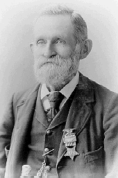

R.W. Burt GAR Photograph

Richard W. Burt circa 1906
Wearing his Grand Army of the Republic officer badge.
From his book War Songs Poems and Odes.

Richard W. Burt circa 1906
Wearing his Grand Army of the Republic officer badge.
From his book War Songs Poems and Odes.